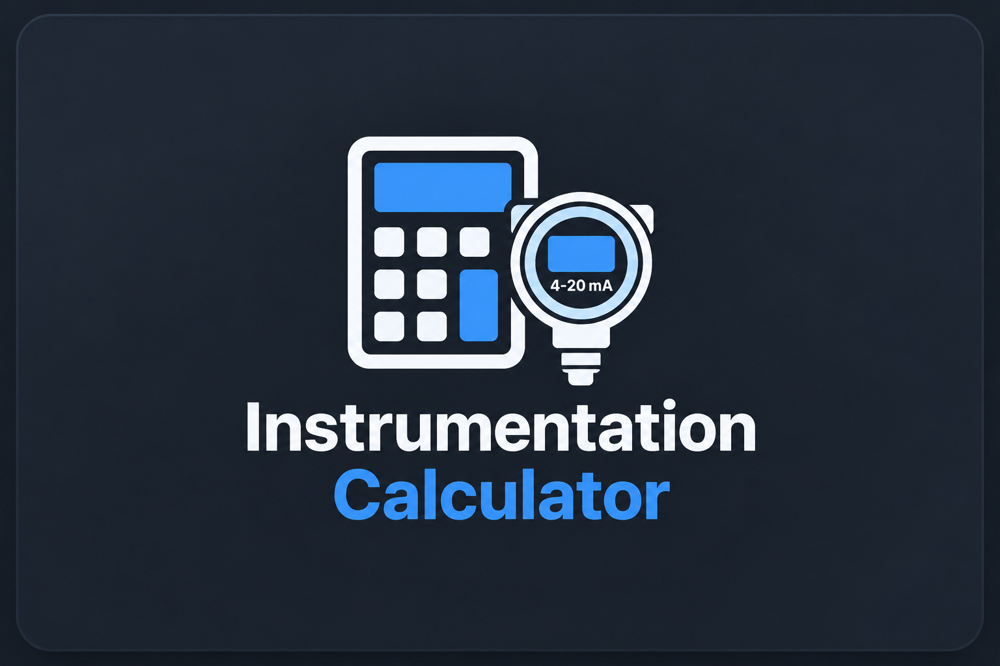
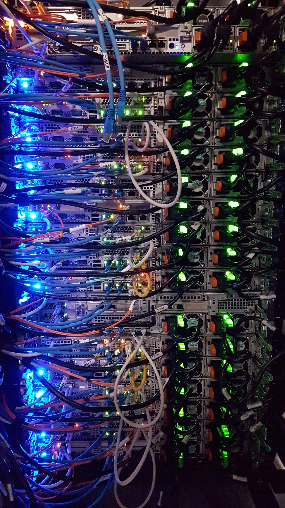

Controls & Automation
Building automation systems, PLC concepts, BACnet, Modbus, field devices, and troubleshooting.
I combine hands-on experience in building automation, instrumentation, networking, and troubleshooting with growing skills in software and web development.
View My Projects About MeBuilding automation systems, PLC concepts, BACnet, Modbus, field devices, and troubleshooting.
4-20 mA signals, transmitters, calibration, LRV/URV, span calculations, sensors, and HART.
IP addressing, subnetting, Ethernet, HTML, CSS, GitHub Pages, and responsive website development.

A web-based calculator for instrumentation values including LRV, URV, span, and 4–20 mA signals.
Open ProjectA networking-focused project built around subnetting, IP addressing, and practical network calculations.
Visit SubnetFox
My first course portfolio project and the foundation for this expanded multi-page professional portfolio.
View Project 01